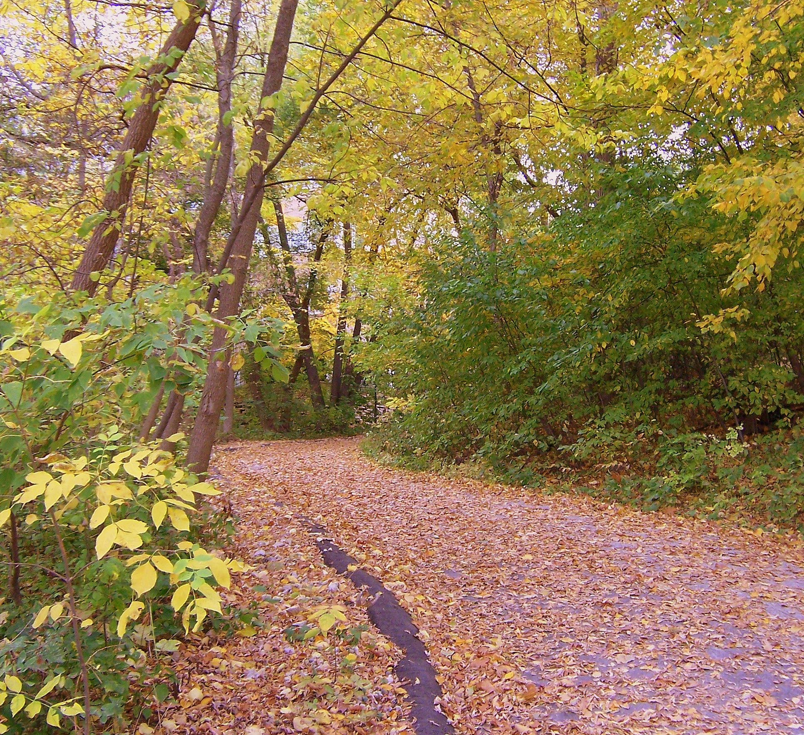

Easy to Start
Each route begins near a familiar Madison landmark and can be enjoyed at a relaxed pace.
Explore three easy routes that connect the city, campus, and lakes.
Find a weekend routeEach route begins near a familiar Madison landmark and can be enjoyed at a relaxed pace.
See local architecture, leafy paths, and lake views without leaving the center of town.
These public routes do not require tickets or special equipment—just comfortable shoes.
The Lakeshore Path follows Lake Mendota through the UW–Madison campus. It is a calm place to watch the water, pass wooded areas, and take a break from busy streets.

Before visiting, review the UW–Madison walking information.
Circle the Wisconsin State Capitol, look at the historic buildings, and continue toward State Street.
Explore Capitol SquareWalk from Monona Terrace toward Law Park for open water views and a clear look back at downtown.
Explore Law ParkPick one route, check the weather, and enjoy Madison at your own pace.
See more Madison walking ideas